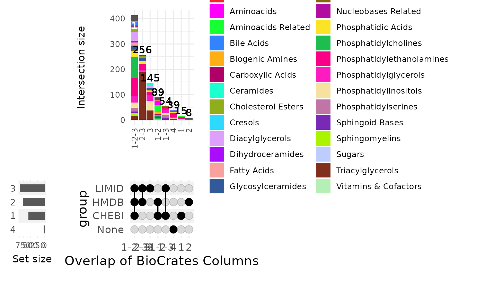

Compare Prior Knowledge Resources and/or Columns within a Single Resource and Generate an UpSet Plot
Source:R/RefactorPriorKnoweldge.R
compare_pk.RdThis function compares gene and/or metabolite features across multiple prior knowledge (PK) resources or,
if a single resource is provided with a vector of column names in metadata_info, compares columns within that resource.
Usage
compare_pk(
data,
metadata_info = NULL,
filter_by = c("both", "gene", "metabolite"),
plot_name = "Overlap of Prior Knowledge Resources",
name_col = "TrivialName",
palette_type = "polychrome",
save_plot = "svg",
save_table = "csv",
print_plot = TRUE,
path = NULL
)Arguments
- data
A named list where each element corresponds to a prior knowledge (PK) resource. Each element can be:
A data frame containing gene/metabolite identifiers (and additional columns for within-resource comparison),
A character string indicating the resource name. Recognized names include (but are not limited to):
"Hallmarks","Gaude","MetalinksDB", and"RAMP"(or"metsigdb_chemicalclass"). In the latter case, the function will attempt to load the corresponding data automatically.
- metadata_info
A named list (with names matching those in
data) where each element is either a character string or a character vector indicating the column name(s) to extract features. For multiple-resource comparisons, these refer to the columns containing feature identifiers. For within-resource comparisons, the vector should list the columns to compare (e.g.,c("CHEBI", "HMDB", "LIMID")). In within-resource mode, the input data frame is expected to contain a column named"Class"(or a grouping column specified via theclass_colattribute). If no grouping column is found, a default grouping column named"Group"(with all rows assigned the same value) is created.- filter_by
Character. Optional filter for the resulting features when comparing multiple resources. Options are:
"both"(default),"gene", or"metabolite". This parameter is ignored in within-resource mode.- plot_name
Optional: String which is added to the output files of the Upsetplot Default = ""
- palette_type
Character. Color palette to be used in the plot. Default is
"polychrome".- save_plot
Optional: Select the file type of output plots. Options are svg, png, pdf. Default = svg
- save_table
Optional: File types for the analysis results are: "csv", "xlsx", "txt". Default = "csv"
- print_plot
Optional: TRUE or FALSE, if TRUE Volcano plot is saved as an overview of the results. Default = TRUE
- path
Optional: Path to the folder the results should be saved at. Default = NULL
- output_file
Character. Optional file path to save the generated plot; if
NULL, the plot is not saved.
Value
A list containing two elements:
summary_table: A data frame representing either:
the binary summary matrix of feature presence/absence across multiple resources, or
the original data frame (augmented with binary columns and a
Nonecolumn) in within-resource mode.
upset_plot: The UpSet plot object generated by the function.
Details
In the multi-resource mode, each element in data represents a PK resource (either as a data frame or a recognized resource name)
from which a set of features is extracted. A binary summary table is then constructed and used to create an UpSet plot.
In the within-resource mode, a single data frame is provided (with data containing one element) and its metadata_info entry
is a vector of column names to compare (e.g., binary indicators for different annotations). In this case, the function expects the data frame
to have a grouping column named "Class" (or, alternatively, a column specified via the class_col attribute in metadata_info)
that is used for grouping in the UpSet plot.
Examples
## Example 1: Multi-Resource Comparison
# Using automatic data loading for multiple resources.
data <- list(hallmarks = hallmarks, gaude = gaude_pathways,
metalinksdb = metsigdb_metalinks(), ramp = metsigdb_chemicalclass())
# Filtering to include only gene features:
res_genes <- MetaProViz::compare_pk(data = data, filter_by = "gene")
#> Error in MetaProViz::compare_pk(data = data, filter_by = "gene"): Column(s) feature not found in resource hallmarks
## Example 2: Within-Resource Comparison (Comparing Columns Within a Single data Frame)
# biocrates_features is a data frame with columns: "TrivialName", "CHEBI", "HMDB", "LIMID", and "Class".
# Here the "Class" column is used as the grouping variable in the UpSet plot.
data_single <- list(Biocft = biocrates_features)
metadata_info_single <- list(Biocft = c("CHEBI", "HMDB", "LIMID"))
res_single <- MetaProViz::compare_pk(data = data_single, metadata_info = metadata_info_single,
plot_name = "Overlap of BioCrates Columns")

## Example 3: Custom data Frames with Custom Column Names
# Example with preloaded data frames and custom column names:
hallmarks_df <- data.frame(feature = c("HMDB0001", "GENE1", "GENE2"), stringsAsFactors = FALSE)
gaude_df <- data.frame(feature = c("GENE2", "GENE3"), stringsAsFactors = FALSE)
metalinks_df <- data.frame(hmdb = c("HMDB0001", "HMDB0002"),
gene_symbol = c("GENE1", "GENE4"), stringsAsFactors = FALSE)
ramp_df <- data.frame(class_source_id = c("HMDB0001", "HMDB0003"), stringsAsFactors = FALSE)
data <- list(Hallmarks = hallmarks_df, Gaude = gaude_df,
MetalinksDB = metalinks_df, RAMP = ramp_df)
metadata_info <- list(Hallmarks = "feature", Gaude = "feature",
MetalinksDB = c("hmdb", "gene_symbol"), RAMP = "class_source_id")
res <- MetaProViz::compare_pk(data = data, metadata_info = metadata_info, filter_by = "metabolite")